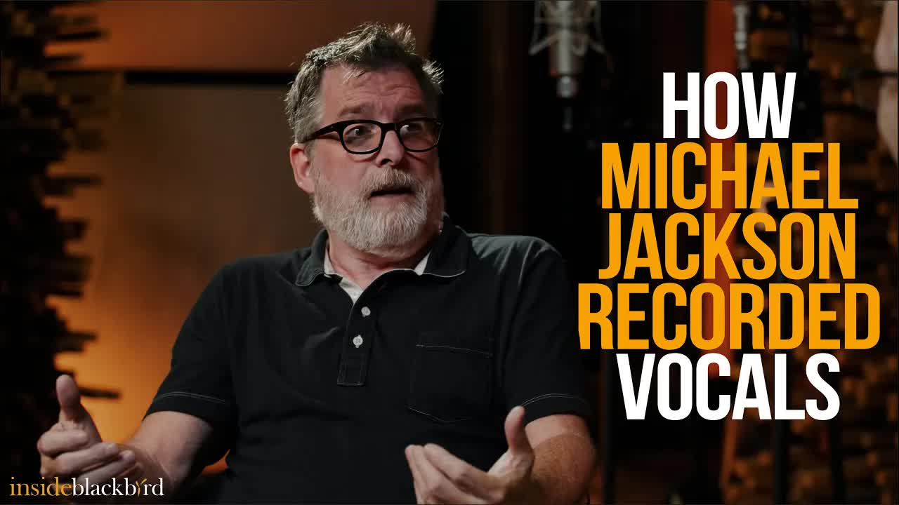

Great Pods
Michael Jackson's Ability In Studio Was Unmatched: w/ Dave Way
Key Points
Michael Jackson was extremely famous at the time, appearing in National Inquirer daily with Bubbles the chimp
Despite his massive fame, Michael was gentle, polite, and respectful to everyone on the team
This was after the "Bad" album and Michael was considered the most famous person in the world
The first meeting happened at Record One studio in Los Angeles in Sid's room
When recording vocals, Michael's performance was absolutely incredible and unbelievable
They had about 15 track ideas prepared before starting, created in New York with Teddy
The song "Remember the Time" was one Michael particularly loved from these tracks
In the early 90s, it was common practice to record one chorus and fly it in to other sections
Engineers used different methods like samplers (S1100), tape machines with offsets, or MIDI triggers
Michael didn't understand the concept of recording just one chorus to copy
Instead of one chorus, Michael sang the entire song from start to finish multiple times
His performance was perfect - second chorus identical, third chorus slightly different but flawless
The vocal doubles were spot-on perfect with perfect breath timing, intonation, and pocket
They completed 6-8 harmony tracks for all choruses in just 20 minutes
This approach was faster than traditional offset and tape machine calculations
The reason other artists didn't do this was because not everyone could be perfect like Michael Jackson
Michael insisted on keeping natural sounds like breathing, stomping, and clapping as part of the beat
Previous engineers had tried to clean up these natural sounds, but Michael wanted them preserved
Full Transcript
Language: en yeah Michael was just actually great what totally surprised me first of all first time I met him I'd gone to the studio we had just flown out from New York went to we were working at record one in Los Angeles Sid's room yeah so I went there the night before to just kind of check it out and get a lay of the land before we started and I'm just in the room by myself and all of a sudden the door opens up and it's Michael and it's just me and him in the room I was like oh my God that's Michael Jackson hi Michael my name's Dave at that point working he was the most famous person in the world this is after uh bad was the album preceding this one that we were working on so yeah this is like when you know bubbles the chimp and him were in National inquire every day what the Man all kind the level of Fame that is kind of more common now but it was certainly nothing you never seen anything like it at that point but he was so great so just gentle and polite and and and respectful of everybody who was working on the team it was great and then on top of it you know when you actually put a mic in front of him and you know record his vocal I mean it was just unbelievable that the first time I recorded him we had this track that we we Teddy and uh Teddy had kind of and I had sat in the studio in New York and came up with all these basically just tracks for ideas to get things rolling you know so we had about 15 songs that were just there weren't songs yet just tracks and there was one that a couple that Michael just loved and so we started on this one he said I have an idea for the chorus let's do the vocals so and it was this song called Remember the Time and so all we had was the track recorded and he wanted to do this chorus vocal and back in these this is like you know early 90s and it was kind of common to just when it came to chorus vocals you flew them in from Chorus to chorus so they were exactly the same you and there were different ways of doing it Teddy used to use a sampler an s00 1100 and we would do a bounce of we' record one chorus bounce it and then fly it in you I think just uh you know or maybe with a midi trigger and then like Ellen baby face would do it with with offsets of of you know two tape machines with simpy offsets and figure out eight bars at 110 BPM is this many you know minutes and seconds and so you need to do it that way but anyway I was ready to just record one chorus of chorus and uh I said Michael you want me to just go to the chorus or he you could just start at the top okay so go to the top and we got through the first chorus and I pressed stop and he he said what why'd you stop I said oh well we're just getting the chorus so you know and he didn't know what I was talking I was like we're going to fly him in and he's like doesn't know what I'm talking about he goes no just go go again from the top and just go to the end okay and I'll do you know one track all the way through and so yep goes all the way gets to the second chorus and sings it perfectly and then in the third chorus it's just a little bit different maybe and then double that and the the double is absolutely spot-on perfect like all the breaths are perfectly in time and the intonation is perfect and the pocket is perfect everything about it so you know we go through in about 20 minutes the whole song and do you know six eight nine tracks or whatever of of harmonies for the choruses and we're done and it sounds amazing yeah and I was like why don't we do this all the time why do we spend all this time with offsets and tape machines and figuring out the math and I was going to say that was faster than you did but but the the you know the main reason the answer to that was that because not everybody's Michael Jackson and make it gonna just be perfect the first time you know so yeah and the other thing he always said was like don't don't erase the breaths right or or this he always like you he would do all this stomping and and clapping and just noise that was a natural part of the beat you know I guess at some point prior Engineers had tried to clean that stuff up and you know and he realized no no no no no we don't want that yeah so we made sure to keep all
← All Summaries
Watch on YouTube